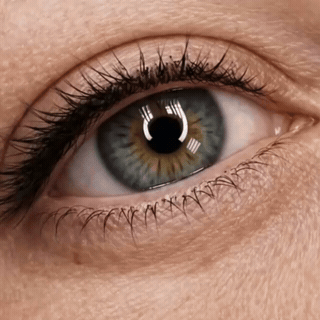

Makijaż permanentny oczu - kreski Poznań: piękne spojrzenie bez codziennego malowania
Wyobraź sobie poranek bez rysowania idealnej kreski eyelinerem. Bez poprawek w ciągu dnia i bez obaw, że makijaż rozmaże się po treningu, na basenie czy podczas wakacji.

Makijaż permanentny oczu pozwala subtelnie podkreślić spojrzenie i sprawia, że oczy wyglądają na bardziej wyraziste każdego dnia. W naszym gabinecie w Poznaniu wykonujemy kreski dopasowane do Twojej urody i kształtu oka. Nie pracujemy według jednego szablonu - każda kreska jest projektowana indywidualnie.
Jaką kreskę wybrać?
Nie każda klientka marzy o mocnym efekcie. Dlatego przed zabiegiem wspólnie wybieramy rozwiązanie, które będzie najlepiej pasowało do Twojej twarzy i stylu.
Kreska zagęszczająca linię rzęs
To najdelikatniejsza forma makijażu permanentnego. Pigment wprowadzany jest pomiędzy rzęsy, dzięki czemu wydają się gęstsze, a spojrzenie bardziej wyraziste. Efekt jest bardzo naturalny i często trudno zauważyć, że to makijaż permanentny.
Kreska klasyczna
Jeśli lubisz eyeliner, ale masz dość codziennego malowania, klasyczna kreska będzie świetnym wyborem. Podkreśla oko i nadaje mu elegancki wygląd, zachowując naturalne proporcje twarzy.
Kreska cieniowana (Shadow Liner)
To propozycja dla kobiet, które lubią delikatny efekt cienia na powiece. Kreska jest miękka, subtelnie rozproszona i wygląda niezwykle lekko.
Jak wygląda zabieg?
Najpierw rozmawiamy o Twoich oczekiwaniach. Następnie wykonujemy projekt kreski i dopiero po jego akceptacji rozpoczynamy pigmentację. Pracujemy spokojnie, bez pośpiechu. Chcemy, abyś czuła się komfortowo i miała pewność, że efekt będzie dokładnie taki, jakiego oczekujesz.
Czy zabieg boli?
To pytanie słyszymy bardzo często. Przed rozpoczęciem zabiegu stosujemy znieczulenie miejscowe, dlatego większość klientek odczuwa jedynie niewielki dyskomfort. Wiele z nich mówi po wizycie, że zabieg okazał się znacznie mniej odczuwalny, niż się spodziewały.
Jak dbać o skórę po zabiegu?
Przez kilka dni warto dać skórze czas na spokojne gojenie. W tym czasie zalecamy:
- unikanie sauny i basenu
- niepocieranie okolicy oczu
- stosowanie zaleconego preparatu pielęgnacyjnego
- ochronę skóry przed intensywnym słońcem
Przekażemy Ci wszystkie zalecenia podczas wizyty.
Cena i czas
- Makijaż permanentny - kreska 600 zł300 zł ≈ 2 godz.
- Kreska z cieniowaniem 600 zł300 zł ≈ 2,5 godz.
Cenę i czas podaję z góry. Dodatkowo płatne znieczulenie miejscowe – 100 zł.
Oferujemy również makijaż permanentny brwi w Poznaniu oraz makijaż permanentny ust w Poznaniu.
Sprawdź nasz cennik makijażu permanentnego w Poznaniu i umów bezpłatną konsultację.
Zarezerwuj wizytę
Konsultacja jest zawsze bezpłatna. Odpiszemy w ciągu 24 godzin - podaj preferowane daty, a dopasujemy termin do Twojego kalendarza.
Wolisz zadzwonić? Jesteśmy pod numerem +48 452 370 369, pon–pt 08–21, sob 08–18.
Najczęstsze pytania
Jak długo utrzymuje się makijaż permanentny kresek?
Najczęściej od 2 do 3 lat. Z czasem pigment stopniowo jaśnieje, dlatego wiele klientek decyduje się na odświeżenie koloru.
Czy kreska będzie wyglądała naturalnie?
Tak. Zależy nam na tym, aby makijaż podkreślał urodę, a nie ją dominował. Projektujemy kreskę indywidualnie, biorąc pod uwagę kształt oka, opadającą powiekę, długość rzęs i Twoje preferencje.
Czy mogę nosić soczewki kontaktowe?
Tak, jednak w dniu zabiegu warto założyć okulary. Do soczewek można wrócić zgodnie z zaleceniami po zabiegu.
Ile trwa zabieg?
Cała wizyta zajmuje zwykle od 2 do 3 godzin. Obejmuje konsultację, projekt kreski, pigmentację oraz omówienie pielęgnacji.
Czy potrzebna jest korekta?
Tak. Po około 6–8 tygodniach wykonujemy wizytę uzupełniającą, która pozwala utrwalić efekt i w razie potrzeby delikatnie go dopracować.
Ile kosztuje makijaż permanentny oczu w Poznaniu?
Aktualne ceny znajdziesz w naszym cenniku makijażu permanentnego. Jeśli nie masz pewności, która technika będzie najlepsza, zapraszamy na konsultację. Chętnie doradzimy i odpowiemy na wszystkie pytania.
Dlaczego klientki wracają właśnie do nas?
Wiemy, że decyzja o wykonaniu makijażu permanentnego nie należy do łatwych. Dlatego poświęcamy czas na rozmowę, dokładny projekt i spokojną pracę. Nie chcemy zmieniać Twojej urody - chcemy ją subtelnie podkreślić. Naturalny efekt, bezpieczeństwo i indywidualne podejście to wartości, którymi kierujemy się podczas każdego zabiegu.